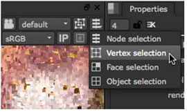
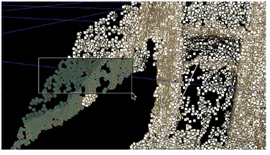

一旦你确定并突出了不太准确的点:
| 1。 | 单击 删除 拒绝 点 自动删除所有突出显示的点。 |
| 2. | 然后，您可以通过将查看器切换到 顶点 选择 模式。 |

| 3. | 使用 输出 在可视化点云时帮助您的控件: |
• 点 尺寸 -设置云中的点的像素大小。
• 每帧输出点 -默认情况下，序列中的所有跟踪点都显示在查看器中。启用此控制可以仅查看在当前帧生成的点。
注意: 如果单独查看点有问题，请尝试减少 3D 手柄尺寸 在 偏好 > 面板 > 查看器句柄 标签。
| 4. | 使用 3D 查看器手动选择云中的点: |
• 将选框拖动到查看器中所需的点上，或
• 持有 转变 ,并将选框拖动到查看器中的几个选择区域上，以同时选择所有点。

注意: 您可以通过按住将点从选择中移除 转变 Alt 并重新选择突出显示的点。
| 5. | 新闻 删除 / 退格 或在查看器中单击鼠标右键并选择 删除 选定 删除点。 |
| 6. | 继续到 分组、标记和烘焙点 . |
|
|